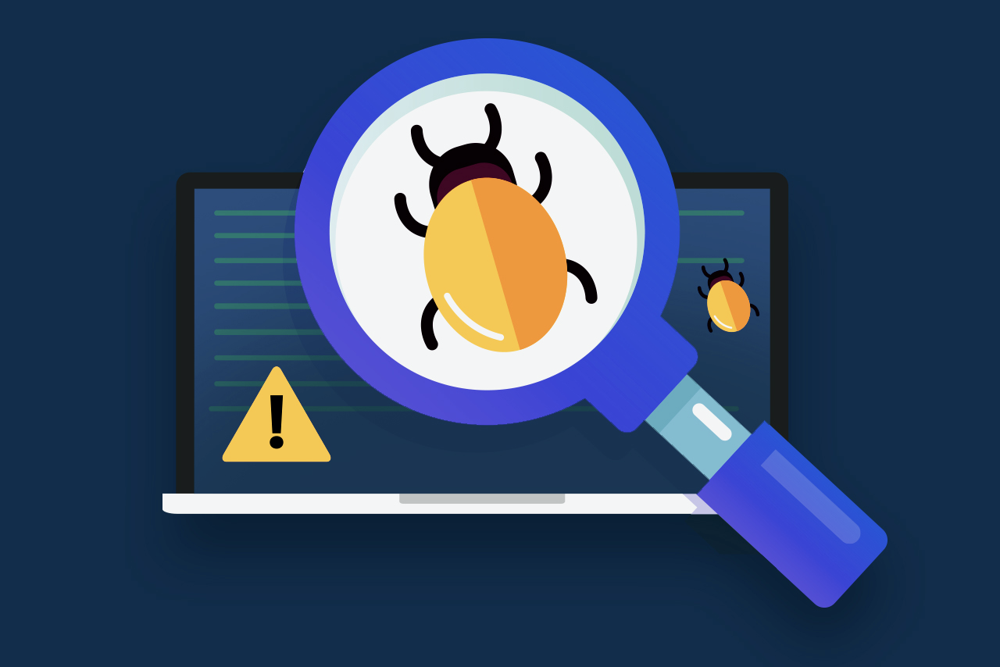

My Career
- Automated Code Generation:
AI can assist in generating code snippets, functions, or even entire programs based on high-level specifications. -
Code Review and Bug Detection:
AI tools can analyze code for potential bugs, security vulnerabilities, and adherence to coding standards. -
Software Maintenance:
AI algorithms can predict potential issues in software by analyzing historical data and patterns.

My Industry
-
Enhanced Code Review:
AI will aid in code reviews by automatically identifying potential issues, bugs, and syntax errors, allowing developers to focus on higher-level aspects of their code. -
Increased Productivity:
AI will automate routine and mundane tasks, allowing software engineers to focus on more creative and complex problem solving aspects of development.
